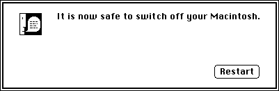

Turning Off the Computer
Currently, there are two methods of turning off the various Macintosh models: one is software-controlled; the other, manual. With the software-controlled method, the Shutdown Manager actually turns off the power. With the manual method, by contrast, the Shutdown Manager darkens the screen and displays an alert box (Figure 8-1) stating that it is safe to turn off the computer.Figure 8-1 A shutdown alert box

Currently, the product lines that employ the software-controlled method are the Macintosh II models, the Macintosh Quadra models, the Macintosh Portable computers, and the PowerBook computers. Those that employ the manual method are the Macintosh LC computers, the Macintosh SE computers, the Macintosh Classic computers, the Macintosh Plus models, and all earlier models.
All Macintosh models restart the same way when a user chooses Restart from the Special menu or when the Finder or other software calls the
ShutDwnStartprocedure. Remember not to callShutDwnPowerandShutDwnStartdirectly because these procedures abruptly terminate other applications that are currently running, possibly resulting in a loss of data.